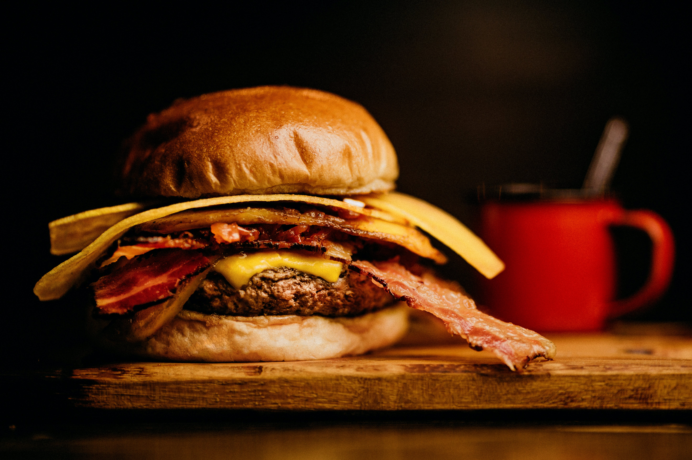

|
ABOUT US |
|
What Laaleys restaurant unique for? Our restaurant sets a high standard for its food quality and ensures that guests receive the same quality with every meal. Serving quality food can earn your restaurant a good reputation and compel your guests to return for repeat visits. High-quality ingredients and an experienced cook are important to serving good food consistently. A good cook understands your guests' needs and works well with the kitchen staff to ensure that guests receive their meal the way they ordered it every time. Laalees restaurant has one or more unique features that stand out in a customer’s mind and give it a competitive advantage over others. This is called your unique selling differential, or unique selling proposition, and you build your brand around this, according to Entrepreneur magazine. |
 |